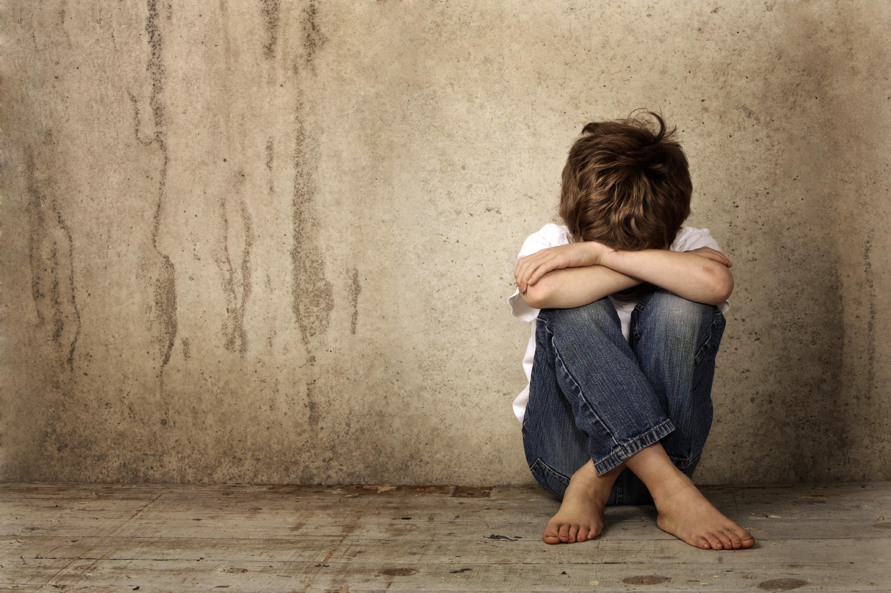

CHILD SEXUAL ABUSE
Child sexual abuse is involvement of a child in sexual activity by an adult or a child. Child sexual abuse may involve physical stimulation of the child, observing the child’s genitals for the purpose of sexual satisfaction or exposing the child to sexual images.
Research done by UNICEF in 2010 in Kenya shows that 32% of females and 18% of male, experience sexual abuse in their childhood. My experience at work in child and adolescent counseling also confirms this report. Out of every 10 children and adolescents who came for therapy between January and July this year, seven (7) marked for child sexual abuse while five (5) out of 10 adults that sought therapy had experienced sexual abuse as children. These statistics show an area that needs a keen attention from every parent and caregivers.
Why is it difficult to detect child sexual abuse?
- Most times, the perpetrator is well known to the child or is a trusted person who understands the child’s schedule.
- Largely, sexual child abuse is introduced as a secret game that does not need to be shared.
- Child sexual abuse mostly is a gradual process. With every step, the perpetrator builds confidence that the child trusts them and will not expose them. This can be done by befriending the child, being present, and connecting with the child through buying them gifts.
- Most times, child sexual abuse happens more than once, and oftentimes, the children are threatened that if they tell about it, something wrong will happen either to them or their loved ones.
Real life experiences
Some months ago, I met a support group of thirteen (13) parents of victims of child sexual abuse who allowed me to share their children’s experiences anonymously so as to help other parents and care givers draw lessons. These are not the only ways children are abused, I have limited the experiences to this group since they are the only parent who consented to their stories being shared.
Child A
The uncle would ask her to massage his penis and after ejaculation, he would take her out to the mall. The uncle was the mothers favorite brother. This happened for two years from age 6-8 years.
Child B
The nanny would give the boy oral sex (fellatio) after bathing him the age of 4 years. This happened for 3 years. According to the parents, the boy had immediately connected so well with the nanny that he would prefer the nanny to his mom.
Child C
The girl had been sexually abused by her lady cousin at the age of 5 years. The cousin who constantly visited the family was 8 years. The children were allowed to play together. This happened for two months. The cousin would tell the young girl that they were playing a secret game and that no one needed to know.
Child D
The 8 year old girl child had been sexually abused (the girl involved with child C) through a secret game by a nanny who would play the same game and tell her not to share. The game would continue for two years.
Child E
11-year-old girl was introduced to pornography by her 21year old male cousin who would invite the girl to watch when parents were away and then they would practice what they saw. The cousin had been hosted by this parents as he went through his university program. This child sexual abuse happened for 2 years.
Child F
A 10-year-old had the step father touching her breasts and buttocks each time they were left at home together and asking her not to let any other boy touch them. This child sexual abuse happened until she turned 14.
Child G
4-year-old boy who would watch a brother having sex with different girls that he brought home. This happened for one year. The brother was 17 years.
Child H
10-year-old who would get home before parents and stay outside the house waiting for the parents since the nanny was withdrawn when she was 8 years. The watchman would let her in his house and eventually ended up having sex with her. This happened for 7 months.
Child I
A 6-year-old girl was asked to undress by her mother’s boyfriend. He would masturbate in her presence every time the mother left them alone. This sexual abuse happened for 8 months and the mother’s boyfriend would buy her either pizza or fries every time she undressed.
Child J
5-year-old who was introduced to sex and would have sex with a neighbor’s child at the balcony. The children were 3 years apart and this was meant to be a secret game that even the parents also played at night. The older child confessed to having watched his parents having sex severally in the living room when they came home drunk.
Child K
8-year-old girl who would share the bed with two other children, a boy and a girl whose mother was her mother’s friend. They would slide their hands into her privates and threaten to tell their mother that she hates them if she ever shared. With many visits, she learnt to enjoy the touches and kisses, and she was caught teaching the same behavior to other children at school.
Child L
A 6-year-old child who would be held by daddy’s friend with an erect penis. He did that repeatedly all the while reading stories to her, playing with her and promising her gifts which he always brought in his next visit.
Child M
A boy and girl (siblings) shared a bedroom and when the boy turned 14, he would leave his bed and move to the girls bed where they would fondle then have sex. The girl was 9 years and the sex had been going on for a year and 9 months before the parents bumped into them. The boy had been watching pornography videos that had been shared by his classmates.
Indicators that the child has been abused sexually
- Child kissing with the tongue thrust in another person’s mouth.
- Attempts to report the abuse directly or indirectly - parents need to pay attention to what children hesitate to speak.
- Pelvic thrusting against another child, ground, or walls.
- Physical injuries on the genitals.
- Fondling another person’s genitals.
- Discomfort around the genitals during bath time.
- Unexplained complaints that the genital area hurts.
- Sexually transmitted diseases or infections.
- Consistent inappropriate sexual play with peers or toys.
- Sleep disturbances and nightmares - in adolescence, they are mostly sexual-oriented nightmares, such as the child being raped.
- Withdrawal from social activities.
- Bedwetting for a child who had already passed this stage.
- Fear of adults of the same gender as the abuser.
- Detailed understanding of sexual behavior (talked or acted) that is inappropriate for a child’s age.
- When among siblings, fear of being left with a particular sibling.
How to help a sexually abused child?
- Listen to the child, even when it is difficult to talk directly about the abuse, listen to what is said and what is not said. After listening to the child, let them know that you believe them. Most parents and care givers openly express their disbelief to the child and this only breaks them further.
- Avoid judging, scolding and blaming the child- its normal to get angry and devastated on the news of child sexual abuse. Therefore, remind yourself that any negative reaction will only make them blame themselves further.
- Create an atmosphere of safety- hug the child, assure them that you will be there for them and that they will not get hurt again. Let them know that you will protect them from the perpetrator (only promise if you intend to do so).
- Do not offer uncomfortable sympathy- things like poor child or ask them to try and get over it, or tell them that is nothing to worry.
- Do not insist on the wrong they did by not telling or ask why they did not stop the perpetrator-child sexual abuse is just too complex for a child.
- The first reactions to child sexual abuse by a parent is shock, numbness, denial and anger. As a parent, even when you do not know what to do, be warm and positive to your child even as you seek help.
- It is prudent to have the child medically examined to ascertain abuse if you are not sure.
- Ask professional help from a child therapist to help treat the abuse.
How to prevent child sexual abuse?
- Be present and emotionally connect with your children - it makes it easy for them to share every aspect of their lives, including the first attempts of child sexual abuse.
- Let children know you will never punish them for telling you anything that happens to them - and if they share any area of their lives willingly, educate instead of punishing.
- Check the children's play and who they play with.
- Let the child know what child sexual abuse is and that it is not okay for any child to be abused.
- Give age-appropriate sex education and let children know they need to share immediately should anyone violate them.
- Be keen on what children watch.
- When you suspect that your child's relationship with a certain person is concerning, act with urgency and keep your child safe.
Effects of untreated child sexual abuse
- Adolescent sexual problems.
- Violence or aggression in adult life as a result of pent-up emotions.
- Repeated cycle of child sexual abuse or sexual abuse as adults.
- Chronic illnesses.
- Anxiety and depression.
- Mental disorders such as post-traumatic stress disorder.
- Addiction issues - drugs, alcohol, sex, etc.
- Interpersonal challenges - inability to form and maintain relationships.
- Feeling ashamed of one’s sexuality.
- High rates of suicide.
- Lack of trust as adults.
- Self-esteem issues.